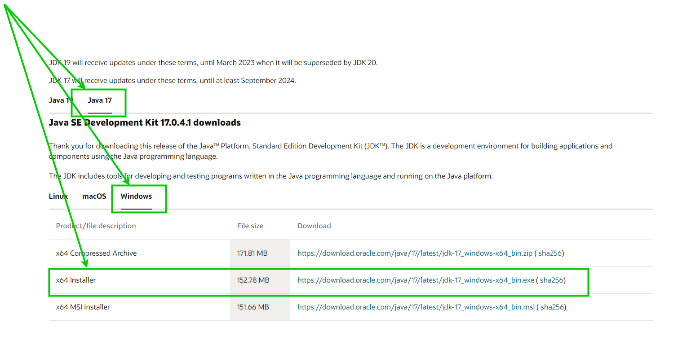
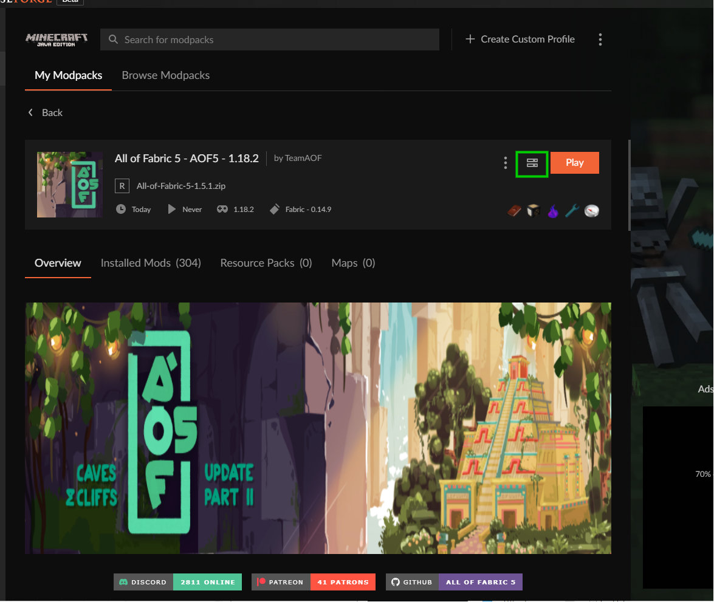
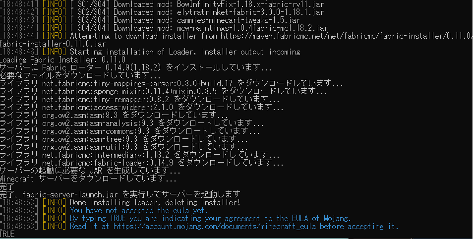

Minecraft All of Fabric 5 Server 設定
Java17をダウンロードする。
Java17ダウンロード

Modpackのserver downloadを押す。

ダウンロードされたデータを、好きな場所において展開する
展開したフォルダの中のstartserver.batを起動する。
このような画面がでてきたら、TRUEとタイプしてエンター

エラーが起きてないようならば。成功